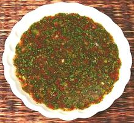

 |
Cilantro Dipping SauceThailand | ||||
| Makes: Effort: Sched: DoAhead: |
3/4 cup ** 15 min Best |
A very flavorful dipping sauce. It can be made without the ground toasted sweet rice for a lighter sauce with not a lot of difference in flavor. | |||
|
2 1 few 1 1/3 1/4 1 |
T T T c c T |
Cilantro Scallion Shallot rings Chili Flakes (1) Lime Juice Fish Sauce Toasted Rice (2) |
Do-Ahead: - (15 min)
|